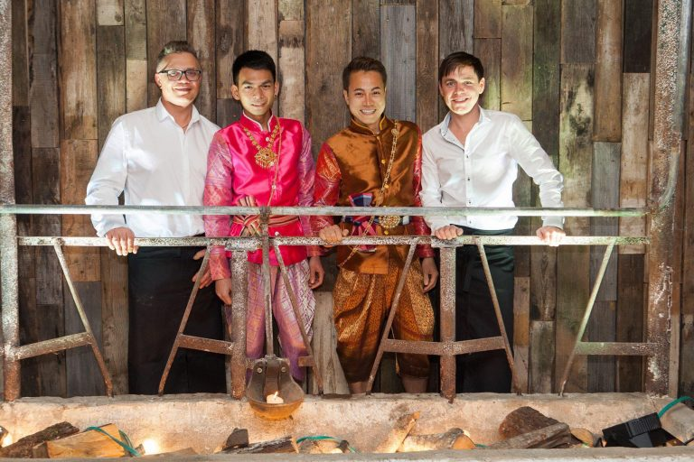

Tere tulemast New Thai restorani!
New Thai on õigeid maitseid pakkunud juba aastast 2016!
Meie kokad on pärit kirde Taist Isan piirkonnast ning kuna igal piirkonnal on oma eripära toitude valmistamisel, siis võib mõni toit olla veidi erinev mujal Tais pakutavast.
Peakokk New juhtimisel valmistavad meie Tai kokad toite nii nagu nende emad ja vanaemad seda kodus teevad. Toite ei ole ilustatud ega “euroopastatud” vähemate vürtsidega ja siin ei ole mingit “fusionit”. Tai spetsiifilise tooraine lennutame Tai farmeritelt otse meie restorani.
Menüüs olevad tšilli märgid vastavad Tai standardile. Tahame seda õiget Tai’d Eestis näidata ning soovime pakkuda sama elamust, mis meid Tai Kuningriigis lummab.